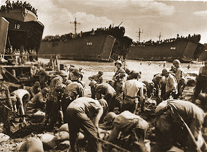
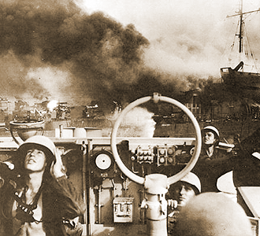
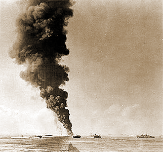

|
j
a v a s c r i p t |
| Pg.1| Pg.2 Landing Craft |
October 28, 1944
Tribune: "U.S. losses now total 189 vessels; 55 ships blasted off Leyte and 27 enemy vessels lost near P.I." They claim 500 planes were downed for the loss of 126 of their own, while the U.S. claims are 206 for the loss of 150. "Sison warns against rumors": Don't get caught quoting MacArthur or contradicting Daihon-ei. "Nippon victories strengthen faith in Republic, says Laurel" — his first utterance since the landing. Aquino is still silent. Incidentally, after Laurel's declaration of war, Aquino asked Roxas: "What do you think the others will say to this?" Feigning surprise, Roxas answered: "Others? Are you with the others too?" Patting Aquino on the knee he added: "Chico, [chum] you went too far." Editorial: "Nippon on the offensive ... taking the initiative everywhere" — Guadalcanal, New Georgia, Bougainville, Buna, Lae, Salamaua, Bismarck, Hollandia, Biak, Noemfoor, Morotai, Peleliu, Saipan, Guam, Tinian — and now Leyte. "The enemy is hard pressed, so much so that he can't even spare a few planes to raid Manila." (We'll see.) MacArthur just announced that American planes are now operating from Leyte airfields. Yet another box score is out with American naval losses totaling 189 ships, including 38 carriers sunk or damaged. What irks is that there are at least 10 Japanese warships in the Bay and perhaps a damaged battleship or two in Cavite, and American planes haven't shown up all day. The Japanese are as likely to hide a few in Philippine waters rather than brave the China Seas at a speed of ten knots. San Francisco mentioned that U.S. planes are scanning the seas for Japanese remnants. Well, they're here! Come and get some. LEYTE: American Cavalry galloped nine miles north and liberated the town of Barugo, which just happens to be the home of our maids. Abuyog in the south was also taken. The Japanese 16th Division of Bataan fame has been practically annihilated. PT boats stopped an attempt to reinforce Leyte by sinking 12 barges fully laden with Japanese troops off Ormoc. SAMAR: Practically all of it has been liberated with the aid of guerrillas. No mention of a Japanese garrison there; it's well known that Samar holds some of the toughest hombres this side of hell, as Mac's own father found out forty odd years ago. Catbalogan was taken so I guess the Japanese have fled. They will be hunted down and sliced into ribbons by the guerrillas in the mountains and valleys of old Samar. Director Engracio Fabre of the Ministry of Religious Affairs is quoted in La Vanguardia as saying the Japanese only occupied the Santa Cruz and Tondo Churches "temporarily" during the first days of the bombings, but both have now been evacuated [after too many protests]. At least it's on record now. |
|
|
|
|
|
| Pg.1 Today's News| Pg.2 |
Supplement
October 28, 1944
An article in the paper talks about American landing craft:
The article concludes: "One can imagine the heavy losses sustained by the U.S. invasion forces in the course of their reckless landing operations onn Leyte." Very lame ending. We're all agog over such special ships!

LST Unloads in Leyte

Watching for Kamikazes

LST Burns in Leyte Gulf
|